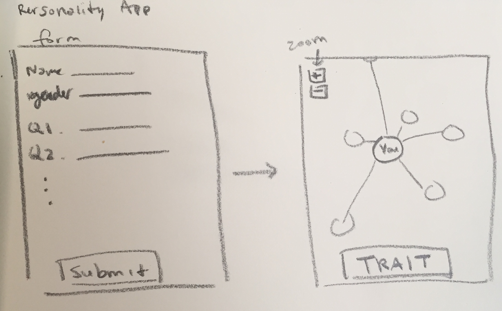

Idea 1: Online comic book reader/reading list web app. For the sake of storage space, lets you upload a set amount of cbr or cbz files and read it online. It will only save that set amount of files and if you upload more it'll delete by oldest issues first. You can put in a reading list and it'll let you know what issue you'have read and what issue is out recently came out. It might even have a recommended comics list. I plan to do this by scraping https://pulllist.comixology.com/thisweek/.
Idea 2: Inspirational design website. You can put in a hex decimal color that you want your design to be and it'll find you art work that contain that color so you can see palettes that people have used.
Idea 3: Personality comparison app for friend groups. You fill out a form and it'll tell you, aspects of your personality and then compares it to those of your friends. It'll create a vizualization of where you rank in terms of closeness in different aspects of your personality. This may include outgoingness, neuroticism, etc..
